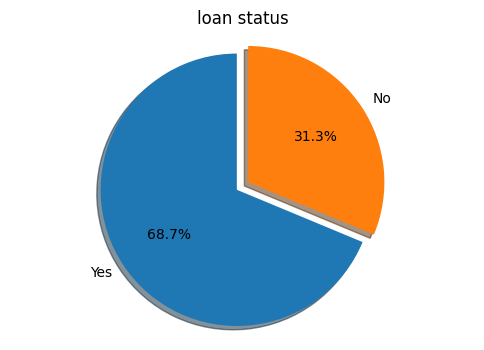
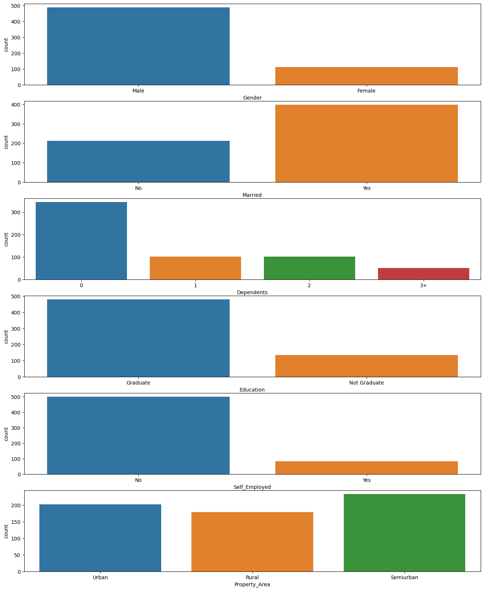
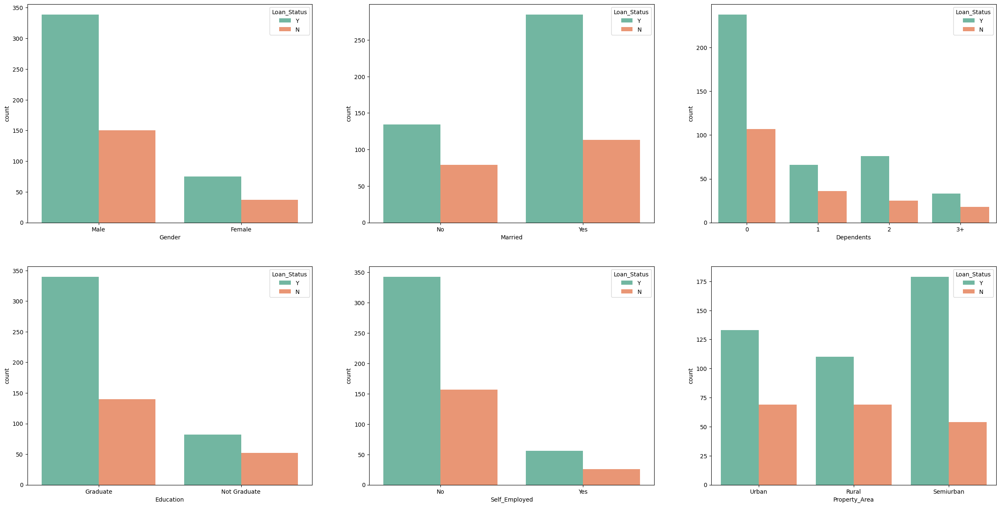
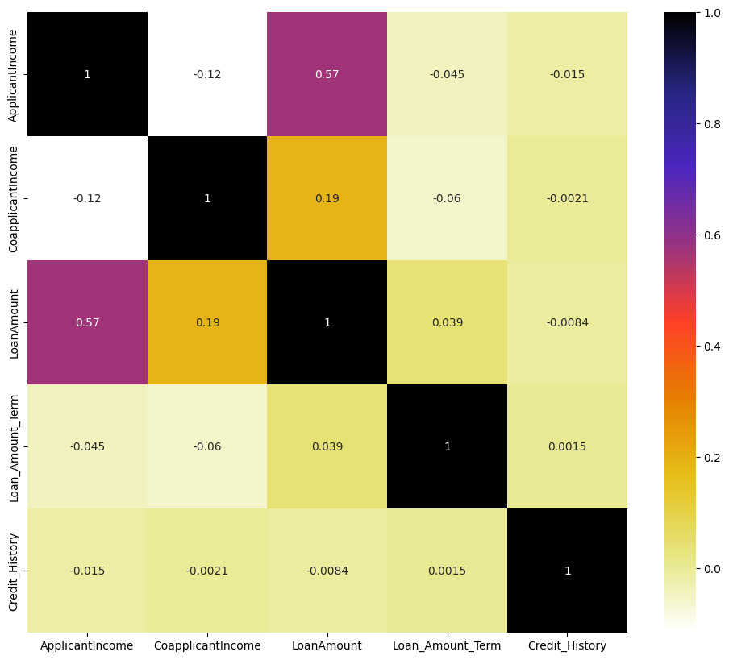
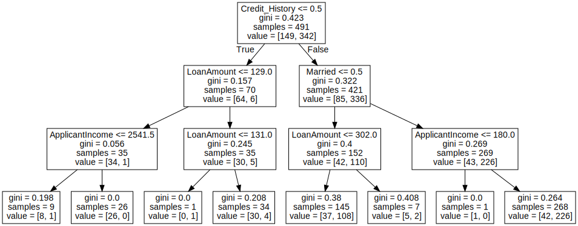

import pandas as pd
import numpy as np
import matplotlib.pyplot as plt
import seaborn as sns
from sklearn.preprocessing import LabelEncoderdata = pd.read_csv('loan.csv')
data.head()| Loan_ID | Gender | Married | Dependents | Education | Self_Employed | ApplicantIncome | CoapplicantIncome | LoanAmount | Loan_Amount_Term | Credit_History | Property_Area | Loan_Status | |
|---|---|---|---|---|---|---|---|---|---|---|---|---|---|
| 0 | LP001002 | Male | No | 0 | Graduate | No | 5849 | 0.0 | NaN | 360.0 | 1.0 | Urban | Y |
| 1 | LP001003 | Male | Yes | 1 | Graduate | No | 4583 | 1508.0 | 128.0 | 360.0 | 1.0 | Rural | N |
| 2 | LP001005 | Male | Yes | 0 | Graduate | Yes | 3000 | 0.0 | 66.0 | 360.0 | 1.0 | Urban | Y |
| 3 | LP001006 | Male | Yes | 0 | Not Graduate | No | 2583 | 2358.0 | 120.0 | 360.0 | 1.0 | Urban | Y |
| 4 | LP001008 | Male | No | 0 | Graduate | No | 6000 | 0.0 | 141.0 | 360.0 | 1.0 | Urban | Y |
data.shape(614, 13)data.info()<class 'pandas.core.frame.DataFrame'>
RangeIndex: 614 entries, 0 to 613
Data columns (total 13 columns):
# Column Non-Null Count Dtype
--- ------ -------------- -----
0 Loan_ID 614 non-null object
1 Gender 601 non-null object
2 Married 611 non-null object
3 Dependents 599 non-null object
4 Education 614 non-null object
5 Self_Employed 582 non-null object
6 ApplicantIncome 614 non-null int64
7 CoapplicantIncome 614 non-null float64
8 LoanAmount 592 non-null float64
9 Loan_Amount_Term 600 non-null float64
10 Credit_History 564 non-null float64
11 Property_Area 614 non-null object
12 Loan_Status 614 non-null object
dtypes: float64(4), int64(1), object(8)
memory usage: 62.5+ KB
drop the column which is not relevant
data = data.drop(columns=['Loan_ID'])data.head()| Gender | Married | Dependents | Education | Self_Employed | ApplicantIncome | CoapplicantIncome | LoanAmount | Loan_Amount_Term | Credit_History | Property_Area | Loan_Status | |
|---|---|---|---|---|---|---|---|---|---|---|---|---|
| 0 | Male | No | 0 | Graduate | No | 5849 | 0.0 | NaN | 360.0 | 1.0 | Urban | Y |
| 1 | Male | Yes | 1 | Graduate | No | 4583 | 1508.0 | 128.0 | 360.0 | 1.0 | Rural | N |
| 2 | Male | Yes | 0 | Graduate | Yes | 3000 | 0.0 | 66.0 | 360.0 | 1.0 | Urban | Y |
| 3 | Male | Yes | 0 | Not Graduate | No | 2583 | 2358.0 | 120.0 | 360.0 | 1.0 | Urban | Y |
| 4 | Male | No | 0 | Graduate | No | 6000 | 0.0 | 141.0 | 360.0 | 1.0 | Urban | Y |
data['Loan_Status'].value_counts()Y 422
N 192
Name: Loan_Status, dtype: int64labels = 'Yes', 'No'
sizes = [data.Loan_Status[data['Loan_Status']=='Y'].count(), data.Loan_Status[data['Loan_Status']=='N'].count()]
explode = (0, 0.1)
fig1, ax1 = plt.subplots(figsize=(6,4))
ax1.pie(sizes, explode=explode, labels=labels, autopct='%1.1f%%', shadow=True, startangle=90)
ax1.axis('equal')
plt.title('loan status', size=12)
plt.show()
data.columnsIndex(['Gender', 'Married', 'Dependents', 'Education', 'Self_Employed',
'ApplicantIncome', 'CoapplicantIncome', 'LoanAmount',
'Loan_Amount_Term', 'Credit_History', 'Property_Area', 'Loan_Status'],
dtype='object')fig, ax = plt.subplots(nrows=6, ncols=1, figsize=(16, 20))
cols=['Gender','Married', 'Dependents', 'Education', 'Self_Employed', 'Property_Area']
for ind, col in enumerate(cols):
sns.countplot(x=col, data=data, ax=ax[ind])
Count column plots to map the dependencce of 'Loan_Status', column on categorical features
fig, ax = plt.subplots(2,3, figsize=(30,15))
sns.countplot(x='Gender', hue='Loan_Status', data=data, palette='Set2', ax=ax[0][0])
sns.countplot(x='Married', hue='Loan_Status', data=data, palette='Set2', ax=ax[0][1])
sns.countplot(x='Dependents', hue='Loan_Status', data=data, palette='Set2', ax=ax[0][2])
sns.countplot(x='Education', hue='Loan_Status', data=data, palette='Set2', ax=ax[1][0])
sns.countplot(x='Self_Employed', hue='Loan_Status', data=data, palette='Set2', ax=ax[1][1])
sns.countplot(x='Property_Area', hue='Loan_Status', data=data, palette='Set2', ax=ax[1][2])
plt.show()
Display the co-realtion between variables using heatmap
plt.figure(figsize=(12,10))
cor = data.corr()
sns.heatmap(cor, annot=True, cmap=plt.cm.CMRmap_r)
plt.show()<ipython-input-54-c8f965688bad>:2: FutureWarning: The default value of numeric_only in DataFrame.corr is deprecated. In a future version, it will default to False. Select only valid columns or specify the value of numeric_only to silence this warning.
cor = data.corr()

checking for missing values
data.isnull().sum()Gender 13
Married 3
Dependents 15
Education 0
Self_Employed 32
ApplicantIncome 0
CoapplicantIncome 0
LoanAmount 22
Loan_Amount_Term 14
Credit_History 50
Property_Area 0
Loan_Status 0
dtype: int64we have some null values, so needto fill this by simple math
# MOD
data['Gender'].fillna(data['Gender'].mode()[0], inplace=True)
data['Married'].fillna(data['Married'].mode()[0], inplace=True)
data['Dependents'].fillna(data['Dependents'].mode()[0], inplace=True)
data['Self_Employed'].fillna(data['Self_Employed'].mode()[0], inplace=True)
data['Credit_History'].fillna(data['Credit_History'].mode()[0], inplace=True)
# MEAN
data['LoanAmount'].fillna(data['LoanAmount'].mean(), inplace=True)
data['Loan_Amount_Term'].fillna(data['Loan_Amount_Term'].mean(), inplace=True)now check if there is any null value or not ↓
data.isnull().sum()Gender 0
Married 0
Dependents 0
Education 0
Self_Employed 0
ApplicantIncome 0
CoapplicantIncome 0
LoanAmount 0
Loan_Amount_Term 0
Credit_History 0
Property_Area 0
Loan_Status 0
dtype: int64handling categorical variable
data.Loan_Status = data.Loan_Status.replace({'Y':1, 'N':0})
data.Gender = data.Gender.replace({'Male':1, 'Female':0})
data.Married = data.Married.replace({'Yes':1, 'No':0})
data.Self_Employed = data.Self_Employed.replace({'Yes':1, 'No':0})feature_col = ['Property_Area', 'Education', 'Dependents']
le = LabelEncoder()
for col in feature_col:
data[col] = le.fit_transform(data[col])data.head(10)| Gender | Married | Dependents | Education | Self_Employed | ApplicantIncome | CoapplicantIncome | LoanAmount | Loan_Amount_Term | Credit_History | Property_Area | Loan_Status | |
|---|---|---|---|---|---|---|---|---|---|---|---|---|
| 0 | 1 | 0 | 0 | 0 | 0 | 5849 | 0.0 | 146.412162 | 360.0 | 1.0 | 2 | 1 |
| 1 | 1 | 1 | 1 | 0 | 0 | 4583 | 1508.0 | 128.000000 | 360.0 | 1.0 | 0 | 0 |
| 2 | 1 | 1 | 0 | 0 | 1 | 3000 | 0.0 | 66.000000 | 360.0 | 1.0 | 2 | 1 |
| 3 | 1 | 1 | 0 | 1 | 0 | 2583 | 2358.0 | 120.000000 | 360.0 | 1.0 | 2 | 1 |
| 4 | 1 | 0 | 0 | 0 | 0 | 6000 | 0.0 | 141.000000 | 360.0 | 1.0 | 2 | 1 |
| 5 | 1 | 1 | 2 | 0 | 1 | 5417 | 4196.0 | 267.000000 | 360.0 | 1.0 | 2 | 1 |
| 6 | 1 | 1 | 0 | 1 | 0 | 2333 | 1516.0 | 95.000000 | 360.0 | 1.0 | 2 | 1 |
| 7 | 1 | 1 | 3 | 0 | 0 | 3036 | 2504.0 | 158.000000 | 360.0 | 0.0 | 1 | 0 |
| 8 | 1 | 1 | 2 | 0 | 0 | 4006 | 1526.0 | 168.000000 | 360.0 | 1.0 | 2 | 1 |
| 9 | 1 | 1 | 1 | 0 | 0 | 12841 | 10968.0 | 349.000000 | 360.0 | 1.0 | 1 | 0 |
Finaly we have all the features with neumerical values
split Features and Target variable
x = data[['Gender', 'Married', 'ApplicantIncome', 'LoanAmount', 'Credit_History']]
y = data['Loan_Status']split into Train — Test data
from sklearn.model_selection import train_test_split
x_train, x_test, y_train, y_test = train_test_split(x, y, test_size=0.2, random_state=42) # 80% of data for "train" and 20% of data for "test"x_train.shape, x_test.shape, y_train.shape, y_test.shape((491, 5), (123, 5), (491,), (123,))Now, we need to choose the best algorithm.
In my opinion, the best algorithm which is suiteable is the decision tree classifier because first thing is decision tree is highly interpretable, Second thing is we don't need to worry about scaling and all at the time of decision tree, because decision we do all the things in internally. Eat whites much better accuracy in comparison of other models like logistic algorithm or SVM
from sklearn.tree import DecisionTreeClassifier
from sklearn.metrics import accuracy_score,f1_score
clf = DecisionTreeClassifier(max_depth=3, min_samples_leaf=35)
clf.fit(x_train, y_train)DecisionTreeClassifier(max_depth=3, min_samples_leaf=35)In a Jupyter environment, please rerun this cell to show the HTML representation or trust the notebook.
DecisionTreeClassifier(max_depth=3, min_samples_leaf=35)
y_pred =clf.predict(x_test)accuracy_score(y_pred, y_test)0.7886178861788617f1_score(y_pred, y_test)0.8586956521739131Finally, it is not very well, but we are good to go
import graphviz
from sklearn import tree
tree_clf = tree.DecisionTreeClassifier(max_depth=3)
tree_clf.fit(x_train, y_train)
dot_data = tree.export_graphviz(tree_clf, feature_names = x.columns.tolist())
graph = graphviz.Source(dot_data)
graph
Now, all the things are completed, we can save or model
import pickle
pickle_out = open('PredictionModel.pkl', mode='wb')
pickle.dump(clf, pickle_out)
pickle_out.close()!pip install -q streamlit
!pip install -q pyngrok
!pip install -q streamlit_ace!ngrok authtoken 2U0tcpeeWlOKDBRQnQVcSnKF8tD_2J3FYquFYDGs6CSB7vhuW%%writefile app.py
import pickel
import streamlit as st
# load the trained model
pickel_in = open('PredictionModel.pkl', 'rb')
classifier = pickel.load(pickel_in)
@st.cache()
# define the functionwhich will make the prediction usinfg the data which the user input
def prediction(Gender, Married, ApplicantIncome, LoanAmount, Credit_History):
#pre-processing user inuut
if Gender == 'Male':
Gender = 0
else:
Gender = 1
if Married == 'Unmarried':
Married = 0
else:
Married = 1
if Credit_History == 'Unclear Debts':
Credit_History = 0
else:
Credit_History = 1
LoanAmount = LoanAmount/1000
# Now Making Prediction
prediction = classifier.predict([[Gender, Married, ApplicantIncome, LoanAmount, Credit_History]])
if prediction == 0:
pred = 'Rejected'
else
pred == 'Approved'
return pred
# Main Function in which we define our web-page ——————
def main:
# Front-End elements
html_temp = """
<div style = "background-color":yellow; padding:13px>
<h1 style = "color:black; text-align:center;">Automated Lone Predection System<h1>
</div>
"""
# Display the Front-End aspect
st.markdown(html_temp, unsafe_allow_html=True)
# Create boxes in which user can enter data required to make prediction
Gender = st.selectbox('Gender', ('Male', 'Female'))
Married = st.selectbox('MArital Status', ('Unmarried', 'Married'))
ApplicantIncome = st.number_input('Applicant Monthly Income')
LoanAmount = st.number_input('Total Loan Amount')
Credit_History = st.selectbox('Credit_History', ('Unclear Debts', 'No Unclear Debts'))
result = ''
# When the "predict" is clicked, make the prediction and store it
if st.btton("Predict"):
result = prediction(Gender, Married, ApplicantIncome, LoanAmount, Credit_History)
st.success('Your Loan is {}'.format(result))
print(LoanAmount)
if __name__=='__main__':
main()This is the default server where the STREAMLIT MODEL will get deployed
!nohup streamlit run --server.port 80 app.py &Get the URL
from pyngrok import ngrok
url = ngrok.connect(port = 8080)
urlngrok.kill()